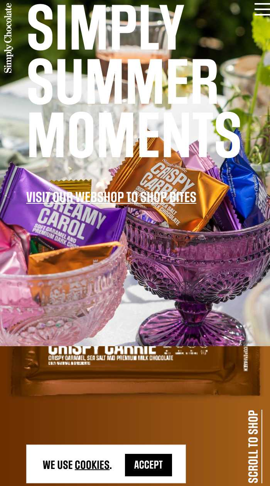

Rule of Thirds
staak.co.uk
staak.co.ukRule of Thirds is used for creating pleasing aesthetics and balance in images. It basically says that placing items of interest on the “thirds” of an image is more pleasing to the eye than centering or more other symmetrical approaches. These thirds are created by dividing an image (or working space) into nine equal parts, with two equally spaced horizontal lines and two equally spaced vertical lines.
White Space and Clean Design
apple.com
apple.comWhite Space and Clean Design is often used to balance elements on a page by creating a natural flow for the user to navigate through the content. Thus, making the information easier to digest. In this example of image, not only does Apple execute active whitespace throughout the website well by placing imagery strategically to draw the users eye to specific elements down the page, but the company also uses passive whitespace to guide the user through the content without a hitch.
Visual Hierarchy
simplychocolatecph.com
simplychocolatecph.com Visual Hierarchy is used to rank design elements and influence in the order you want your users to view them. By using principles like contrast, scale, balance and, more, you can help establish each element in its rightful place and help the most important elements stand out.